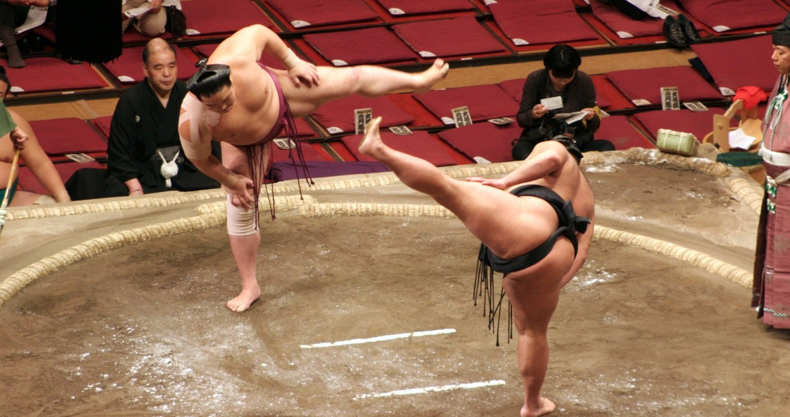

Η ισορροπία, η ιδιοδεκτικότητα και η αντίληψη χώρου αποτελούν βασικές κινητικές δεξιότητες που συμβάλλουν στον έλεγχο του σώματος και στη βελτίωση της αθλητικής απόδοσης. Στο άθλημα του Σούμο, η ικανότητα διατήρησης της σταθερότητας και η αποτελεσματική διαχείριση του κέντρου βάρους αποτελούν θεμελιώδη στοιχεία για την επιτυχή εφαρμογή τεχνικών ώθησης, μετατόπισης και αποσταθεροποίησης του αντιπάλου. Σκοπός του παρόντος άρθρου είναι η παρουσίαση του ρόλου της ισορροπίας, της ιδιοδεκτικότητας και της χωρικής αντίληψης στην προπονητική διαδικασία του Σούμο, καθώς και η ανάλυση των ωφελειών που προκύπτουν από την ανάπτυξη αυτών των δεξιοτήτων, ιδιαίτερα σε παιδιά και αρχάριους αθλητές.
Η ανάπτυξη βασικών κινητικών δεξιοτήτων αποτελεί θεμελιώδη στόχο της φυσικής αγωγής και της προπονητικής διαδικασίας στα μαχητικά και παλαιστικά αθλήματα. Η ισορροπία, ο συντονισμός και η ιδιοδεκτική ικανότητα αποτελούν κρίσιμους παράγοντες για τον έλεγχο του σώματος κατά τη διάρκεια δυναμικών κινητικών δραστηριοτήτων.
Το Σούμο, ως μορφή πάλης με περιορισμένο αγωνιστικό χώρο και έντονη σωματική επαφή, απαιτεί υψηλό επίπεδο ελέγχου του κέντρου βάρους και αποτελεσματική διαχείριση της σταθερότητας του σώματος. Η ικανότητα ενός αθλητή να διατηρεί την ισορροπία του, ενώ παράλληλα επιχειρεί να αποσταθεροποιήσει τον αντίπαλο, αποτελεί βασικό στοιχείο της τεχνικής του αθλήματος.
Η ισορροπία ορίζεται ως η ικανότητα διατήρησης του σώματος σε σταθερή θέση ή η ικανότητα επαναφοράς του σε κατάσταση σταθερότητας μετά από διαταραχή. Στα παλαιστικά αθλήματα, η ισορροπία συνδέεται άμεσα με τη θέση του κέντρου βάρους σε σχέση με τη βάση στήριξης.
Στο Σούμο, οι αθλητές χρησιμοποιούν τεχνικές ώθησης, έλξης και περιστροφής με στόχο τη μετατόπιση του κέντρου βάρους του αντιπάλου εκτός της βάσης στήριξης. Η αποτελεσματική διαχείριση αυτών των μηχανικών αρχών απαιτεί ισχυρή μυϊκή ενεργοποίηση των κάτω άκρων, του κορμού και των σταθεροποιητικών μυών.
Η ιδιοδεκτικότητα αποτελεί βασικό στοιχείο του νευρομυϊκού ελέγχου και αναφέρεται στην ικανότητα του οργανισμού να αντιλαμβάνεται τη θέση και την κίνηση των αρθρώσεων και των μυών χωρίς τη χρήση οπτικών ερεθισμάτων. Οι ιδιοδεκτικοί υποδοχείς που βρίσκονται στους μύες, στους τένοντες και στις αρθρώσεις παρέχουν συνεχή πληροφορία στο κεντρικό νευρικό σύστημα σχετικά με τη θέση και την κίνηση του σώματος.
Στο Σούμο, η ιδιοδεκτικότητα επιτρέπει στον αθλητή να αντιλαμβάνεται άμεσα μικρές μεταβολές στη δύναμη ή την κατεύθυνση της πίεσης που ασκεί ο αντίπαλος. Η ικανότητα αυτή συμβάλλει στην ταχύτερη προσαρμογή της στάσης του σώματος και στην αποτελεσματικότερη εφαρμογή τεχνικών αποσταθεροποίησης.
Η αντίληψη χώρου αφορά την ικανότητα του ατόμου να κατανοεί τη θέση και την κίνηση του σώματός του σε σχέση με το περιβάλλον. Στο Σούμο, ο αγωνιστικός χώρος είναι αυστηρά οριοθετημένος, γεγονός που απαιτεί υψηλό επίπεδο χωρικού προσανατολισμού.
Οι αθλητές πρέπει να διαχειρίζονται συνεχώς την απόσταση από τον αντίπαλο, τη θέση τους μέσα στον κύκλο και τη δυναμική των κινήσεων που πραγματοποιούνται κατά τη διάρκεια της αναμέτρησης.
Η ανάπτυξη της ισορροπίας και της ιδιοδεκτικότητας μπορεί να επιτευχθεί μέσω στοχευμένων ασκήσεων που ενσωματώνονται στην προπονητική διαδικασία. Τέτοιες ασκήσεις περιλαμβάνουν:
Οι ασκήσεις αυτές συμβάλλουν στη βελτίωση του νευρομυϊκού ελέγχου, της σταθερότητας του σώματος και της αποτελεσματικότητας των κινήσεων κατά τη διάρκεια της πάλης.
Η ισορροπία, η ιδιοδεκτικότητα και η αντίληψη χώρου αποτελούν θεμελιώδεις παράγοντες για την ανάπτυξη της κινητικής ικανότητας και της αθλητικής απόδοσης στο Σούμο. Η συστηματική προπόνηση αυτών των δεξιοτήτων συμβάλλει στη βελτίωση του ελέγχου του σώματος, της σταθερότητας και της ικανότητας αντίδρασης σε δυναμικές συνθήκες πάλης.
Ιδιαίτερα σε παιδιά και αρχάριους αθλητές, η ανάπτυξη των παραπάνω δεξιοτήτων συμβάλλει στη γενικότερη κινητική εξέλιξη, στη βελτίωση του συντονισμού και στην ασφαλή συμμετοχή σε αθλητικές δραστηριότητες.
